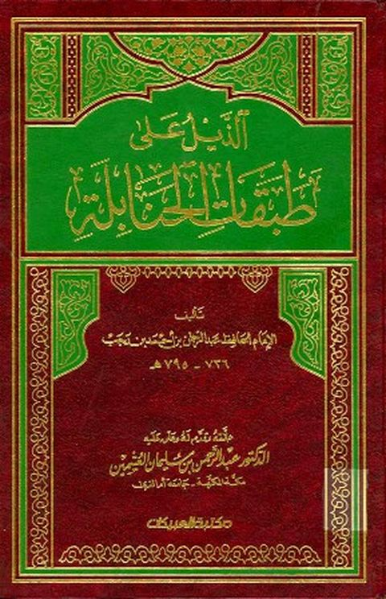

Downloads need an internet connection.
الذيل على طبقات الحنابلة- مشكول
Authors: ابن رجب الحنبلي
Editors: عبد الرحمن بن سليمان العثيمين
Publishers: مكتبة العبيكان
**▫️ العنوان: الذيل على طبقات الحنابلة- مشكول** ▪️ المؤلف: #عبد_الرحمن_بن_أحمد_بن_رجب_الحنبلي ▫️ المحقق: #عبد_الرحمن_بن_سليمان_العثيمين ▪️ الناشر: #مكتبة_العبيكان ▫️ تاريخ النشر: 1425هـ 2005م ▪️ بلد النشر: الرياض، #السعودية ▫️ الطبعة: 1 ▪️ عدد الأجزاء: 5 ▫️ الصفحات: 2784 ▪️ نوع الوعاء: #كتاب ▫️ التصنيف الرئيسي: #التراجم_والأعلام ۪